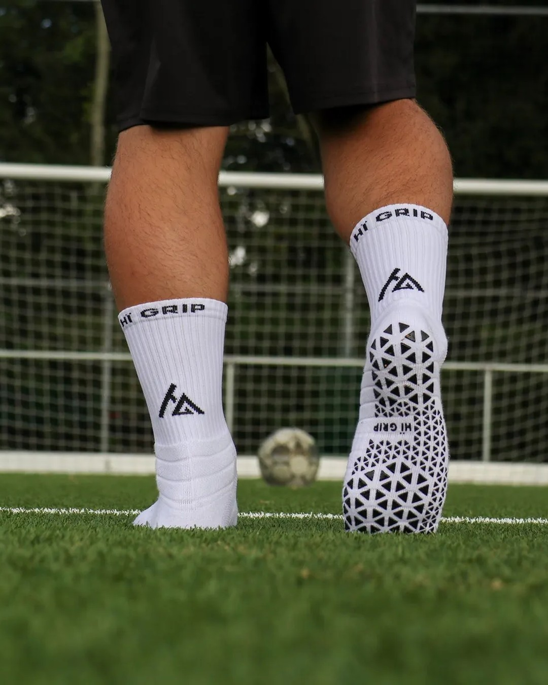
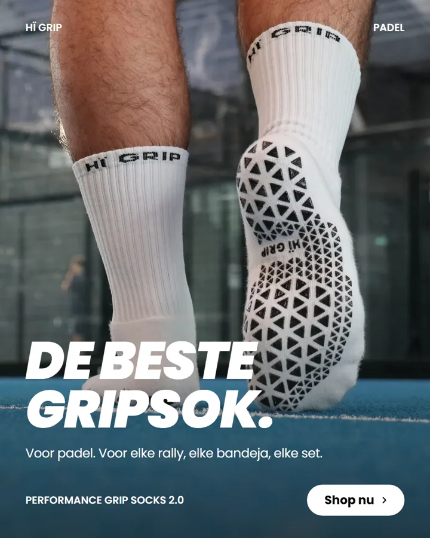
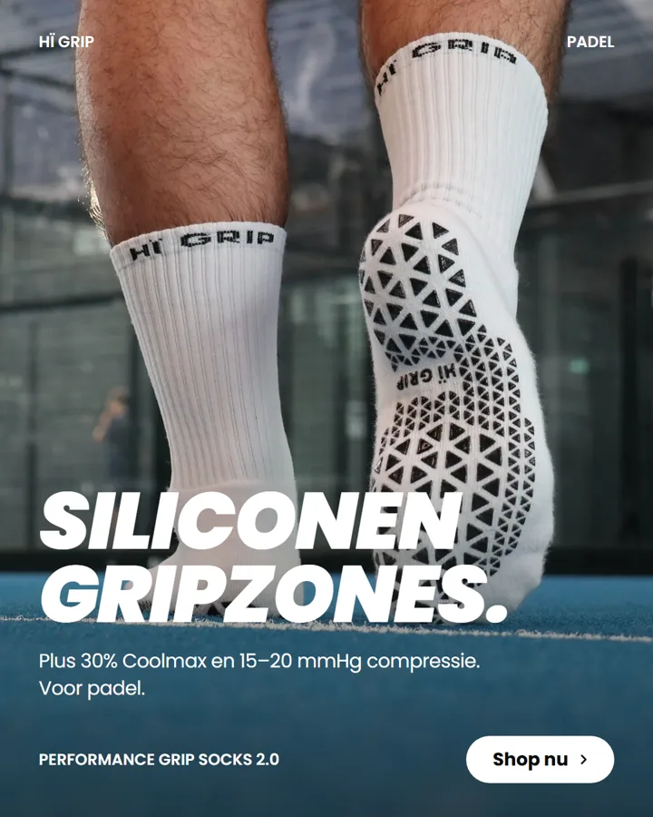
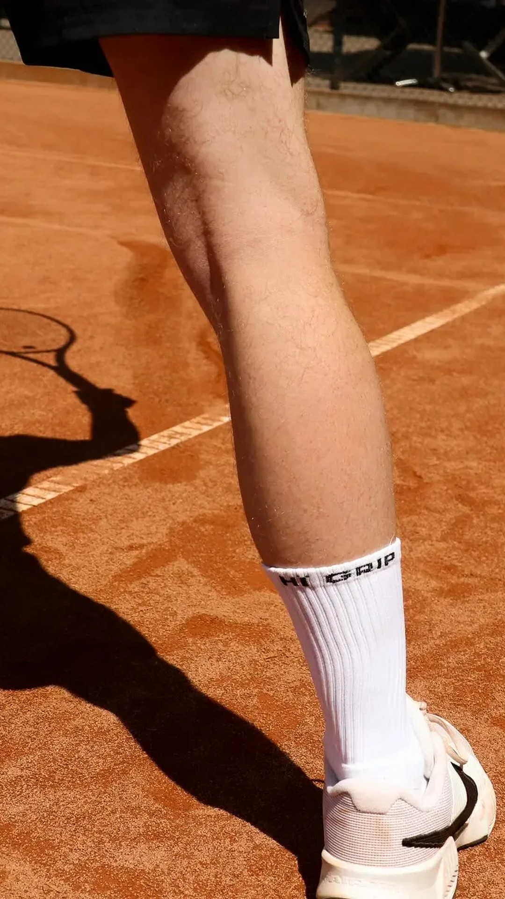

4 testkaarten, 2 hypotheses. Stand op 26 oktober 2026.

Hypothese A
Komt 30% van de bestellingen door de technische features van de gripsok?
Hypothese B
Kan een producent clubsokken maken voor één club: 200–500 paar, binnen 6–8 weken, in onze kwaliteit?
Testkaart 1 · 2 weken · ± 7 uur werk


Test 1 · live op Instagram, nog geen data
GedaanVier A/B-paren gebouwd op eigen foto's (padel, voetbal, tennis, rugby). Alleen de boodschap verschilt. Live via de A/B-testfunctie van Meta.
Wat ik ervan leerIk lees de uitslag als richting, niet als bewijs. Een klik is geen koop, dus ik meet ook add-to-carts. De feed haalt meestal 0,2–0,9% CTR.
Testkaart 2 · 2 weken · ± 2 uur werk
Mail na je bestelling
Features · telt voor de hypothese
Andere redenen
Schets van de vraag
Test 2 · opgezet, nog geen reacties
WaaromTest 1 meet aandacht, deze test meet echte kopers. Samen dekken ze klik én koop.
InzichtBij een paar bestellingen per week telt elke reactie zwaar. Een open vraag vangt redenen op die we zelf niet bedachten.
VervolgReacties tellen tot 1 november. Bij te weinig respons verleng ik de looptijd.

Testkaart 4 · 1 week · ± 8 uur werk
Gelijk als
offerteaanvragen verstuurd
reageren binnen 7 dagen
MOQ ≤ 200 paar, levertijd ≤ 6 weken, haalbare marge, kwaliteitsbewijs
Testkaart 3 · 2 weken · ± 8 uur werk
Doel: gemiddeld 4 of hoger
Test 3 en 4 · nog niet gestart
Test 4Aanvraag + 7 dagen wachten
Test 4Bellen met de 3 beste
Test 3Sample maken en leveren (schatting)
Test 3Testen, 10 wasbeurten
Deze week: offerteaanvraag naar 10 leveranciers. Voorstel: test 3 afronden eind november.
Vragen?